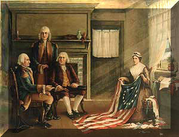

We have high quality customers in these peaceful communities of California's Central Coast....nice, nice people. And every one who walks through our business door has particular and/or special needs....and to the best of our ability we work to serve those needs, which can include something as easy and as simple as basic questions about buying or selling stamps or coins or about the various types of bullion gold and silver.
And sometimes we can't answer all the questions folks ask...or supply products we don't stock or are unavailable to us....and there are questions our customers think we should be able to answer and we try....
and while we have been in this business for a long time, both the questions and answers change with the times and with collector interests....and no one, can know the answers to every possible question...
We mention this because from time to time we read or hear of a critical or unhappy comment about our business....usually a complaint when an individual refuses to accept our reason for how and why we buy or sell particular items, generally regarding pricing...or negative comments about failing to service their needs.
Our policy is to take care of every customers needs to the best of our ability and still allow the business to thrive.!
Now having said that we would like to share some rationale regarding the questions a business like ours deals with daily.
Questions we are regularly asked:
Today with all the interest in gold and silver, individuals want to know how to buy it and then how to sell should they want or need to....there are questions regarding the best kinds of gold and silver to buy....needless to say, we spend considerable time talking the pros and cons of all of that.
With beginning collectors the questions concern how to start putting together a collection ...what are the best coins or stamps to collect....with more 'mature' collectors the discussions revolve around how to buy coins or stamps that will increase in value...etc.
Well, we try not to impose our personal opinions on what a customer should collect or how....we share our thoughts but always try to help them discover their personal interests and just be helpful.
We have a large inventory of medium priced items. There is much for the collector to choose from among the coins and stamps that are currently available to collect....and no one business can have them all. We have chosen to focus on a good selection of graded, problem free U S coins and stamps...we have some currency, both U S and foreign and we stock some basic supplies.
We work to keep our inventory fairly priced and if it is pointed out to us that we have made a pricing error, we double check the latest published pricing and adjust accordingly. However, at all times we have to price inventory and services correctly and competitively so that at the end of the day the business bills can be paid....
Thus we will offend some because we do not haggle or bargain once we determine a price...and we maintain a pricing structure that we feel is fair to all customers and to us.
A large part of our business is appraising collections.... both personal and inherited and often buy accumulations (large and small) and the question for us becomes how to dispose of eclectic collections...often a mixture of coins, stamps, and misc 'stuff'.
Much of that process is straight forward. However many collections, 'inherited and otherwise', contain much that has no commercial value....and it is sometimes hard for heirs to believe 'that they possess items which have no current collector interest or intrinsic value.
Our 'offer to buy', whether one coin at a time or hundreds, is always based on being able to resell the item(s) and at what price...we have to know before we buy that we have a market for selling the item....and at the end of the day we (or any business) must be able to show a gross profit arising from our buying and selling....
And thus it is sometimes difficult for sellers to understand that not everything they wish to sell us is something we can then resell....or that in fact, some items cannot even be given away depending upon the economy of the time and the collecting mood of the time.
For example, some years ago, most all stamp collectors included First Day Covers (FDCs) in their collections...and over time we developed a large and good inventory.T day almost no one collects FDCs....and almost every older stamp collection has FDCs....sometimes a lot of them, many of which we can not even give away.
Now we struggle to explain this to an 'heir' who hopes they have inherited something wonderful and valuable, and some do....and how to say this to a collector who now wants to sell his own collection and expects to realize more than he paid for it.
Well, we in this business face this situation in many areas related to collecting in our day to day interaction with the public. People in the collectibles industries have to have an impressive amount of knowledge before either buying and selling....in order to stay in business....i n order to be there when a customer needs us.
Speaking again of the interest in both buying and selling gold and silver. Trying to decide the best time to buy is a real problem....for the dealer it is a very 'tricky' situation because the price of bullion can change in a moment and inventory on hand may end up being sold at a loss. Buyers have been conditioned to expect to buy at what is known as a 'spot price'.....which for some time now has been an ever moving target, the price being set and reset daily by governments (Federal Reserves working through the big banks world wide) and which today works mainly to control the buying and selling of futures contracts. It appears that the physical metals market has its own manipulated market, seemingly not tied as closely today to the so called 'spot' price..
Many bullion buyers search the internet for price and come in to the store with an idea of what price they are wanting/willing to accept whether buying or selling....It should be told that bullion dealers have a small gross profit margin ....a small profit which can disappear the moment the price of gold or silver drops which of late has been the case. Thus in a market where the price is changing daily such as we have experienced the past several years, the business of buying or selling gold or silver profitably can be difficult
For us it is explaining all this to people who do not follow the financial markets and thus do not understand the price changes.
However we devote whatever time is needed to helping those individuals who wish to work with us. These customers get personal attention. Our focus is to have that customer walk away from the encounter with the best our business has to give.
We share these thoughts with you hoping this bit of information provides a sense of what to expect when you visit
Jan 2017: Under current law, If your bank is failing and the U.S. government fails to bail them out, under a mandate titled "Adequacy of Loss-Absorbing Capacity...", approved by the G20, they can take your money and convert it into shares of equity in the failing institution. These laws exist and the public has no idea that access to their money can be confiscated as a big-bank "bail-in" to save U.S. banks from closing. Learn how to protect yourself from the next financial meltdown before it's too late!
